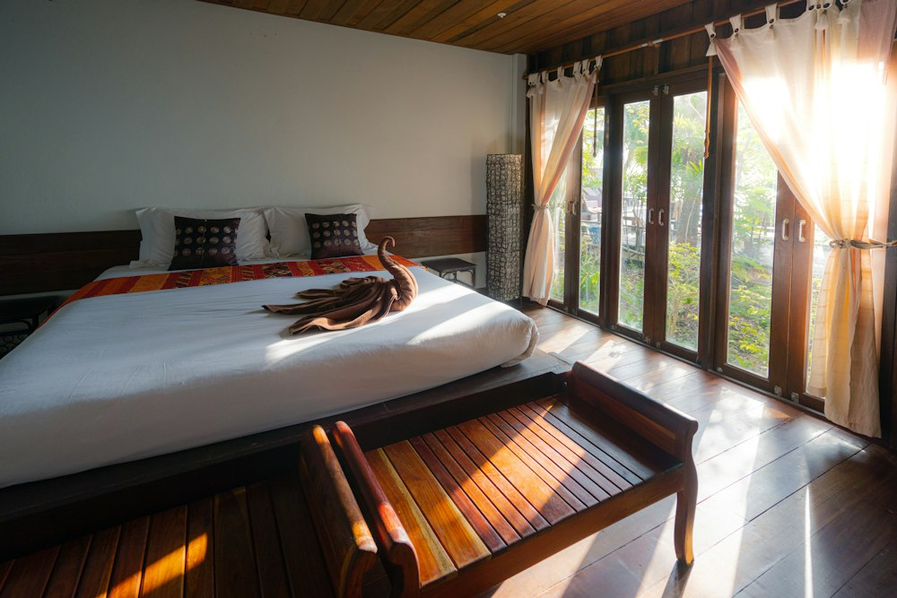

בודפשט 2026
24–28 בנובמבר · 5 ימים, 4 לילות
הלו״ז
טיסות Wizz Air
⚠️ התיק הקטן הוא לא טרולי – תרמיל או תיק צד שנכנס מתחת למושב. טרולי עם גלגלים (55×40×23) לא נכלל ויחויב בשער.
המלון
מה בא לכם?
🏨 מדריך המלון והבריכה המחוממת
Hotel Casati Budapest והטבת ה-VIP החינמית ב-Hotel Cortile Budapest

Hotel Casati Budapest
📍 Paulay Ede u. 31, 1061 Budapest
מלון בוטיק מעוצב ואינטימי הממוקם ברובע התרבות היוקרתי של פשט, צמוד לשדרת אנדראשי, בית האופרה ומרחק 5-7 דקות הליכה מכיכר Deák ומרחוב ואצי. חדרים שקטים, ארוחת בוקר מעולה, סאונה פנימית וחדר כושר חופשיים לאורחים.

מלון האחות Cortile שוכן ברחוב Dessewffy u. 14. מרחק של כ-600 מטר בלבד ממלון Casati (הליכה רגלית פשוטה ומהירה של 7-8 דקות).
בריכת אינפיניטי מקורה בזכוכית ומחוממת בקומה העליונה מול שמי בודפשט. טבילה חמימה ומרגיעה כשהאוויר בחוץ קריר, ולצידה בר קוקטיילים (SkyBar).
הבריכה פתוחה בכל יום מ-06:00 בבוקר עד 22:00 בלילה. ה-SkyBar פועל מ-16:00 עד 22:00.
גשו לקבלה של מלון Casati ואמרו שאתם מעוניינים ללכת לבריכה ב-Cortile. הצוות יתאם מולם את הכניסה החופשית שלכם. קחו חלוק ומגבת מהחדר של Casati וצאו ליהנות!
🍔 קולינריה ומסעדות (ללא חזיר, ללא שרצים)
מדורג מהמומלץ ביותר לפחות מומלץ • 100% בקר, עוף, איטלקי, חלבי וקינוחים
9 מאכלי החובה של בודפשט (You Must Try!)
מדריך הטעמים המסורתיים שחובה לטעום • הנחיות כשרות ואיך להזמין בלי חזיר, איפה הכי שווה לאכול וכמה זה עולה
🍸 ברים וחיי לילה קרובים למלון Casati
מדורג לפי איכות ומרחק הליכה ברגל מ-Paulay Ede 31 • מקומות מובילים לסגירת הערב
🛍️ שופינג, קניונים ועודפים
מדורג מהמומלץ ביותר לפחות מומלץ • סניף Primark, HalfPrice עד 70% הנחה, מדרחובים ושווקים
🎄 שווקי כריסמס, רומנטיקה ואטרקציות
מדורג מהמומלץ ביותר לפחות מומלץ • שווקי חג המולד, החלקה על הקרח, מרחצאות, שייט ואקשן
💡 טיפים קריטיים, תחבורה וכספים
כל מה שחשוב לדעת בשטח: קו 100E, Bolt, החזר מס Tax Free, המרת מטבע ואזהרות
החזר מס (Tax Free) על קניות בבודפשט – המדריך המלא
קניתם בחנות אחת בסכום של מעל 68,000 פורינט (175 €, כ-650 ₪)? אתם זכאים לקבל חזרה כ-15% מסכום הקנייה ישירות לחשבון או במזומן! המדריך המלא צעד-אחר-צעד, כולל כל הטיפים הסודיים שלא מספרים לתיירים.
מתחיל כבר בחנות 🧥👢👓👜
- קחו איתכם את הדרכון לשופינג: חובה להציג דרכון מקורי פיזי או את הברקוד האישי באפליקציית Global Blue בעת התשלום בקופה.
- ודאו שהחנות משתתפת בתכנית Tax Free: לפני שמשלמים, שאלו את המוכר: "Tax Free with Global Blue?" (רוב החנויות בקניונים כמו Etele Plaza, Arena ו-Westend משתתפות).
- בקשו טופס החזר מס (Tax Free Form) בקופה: הקופאי ימלא או ידפיס טופס ייעודי עם פירוט החשבונית.
- בדקו את הפרטים בטופס: ודאו ששמכם המלא, מספר הדרכון שלכם, סכום הקנייה ופירוט הפריטים מודפסים בצורה תקינה ומדויקת.
בשדה התעופה בבודפשט (טרמינל 2B ו-2A) ✈️
- הגעה לצ'ק-אין בטרמינל 2B: הגיעו לעמדת הצ'ק-אין של חברת התעופה (בין שעתיים ל-3 שעות לפני הטיסה). בצעו צ'ק-אין וקבלו כרטיס עלייה למטוס (Boarding Pass) ותגי מזוודה.
- אם שמתם פריטי Tax Free במזוודה הנשלחת לבטן המטוס: אמרו לפקיד במפורש: "I need Tax Free for this luggage". הפקיד ישקול ויתייג את המזוודה – אבל לא ישלח אותה במסוע! קחו את המזוודה איתכם.
את פריטי ה-Tax Free הקטנים שימו בתיק הקטן שעולה איתכם למטוס (40×30×20 ס״מ – לא טרולי, אז רק מה שנכנס). כך תמסרו את המזוודה הגדולה מיד בצ'ק-אין בלי לגרור אותה בין הטרמינלים. פריטים גדולים שנשארים במזוודה – בקשו בצ'ק-אין "Tax Free" לפני שהיא נשלחת.
- קבלת אישור וחותמת ממכס (Customs Desk): גשו עם הקניות, הקבלות, הטפסים וכרטיס העלייה למטוס לעמדת המכס הממוקמת בטרמינל 2A (שתי דקות הליכה לכיוון ימין מטרמינל 2B).
אל תיבהלו! על דלפק המכס מונח מכשיר טלפון פנימי. חייגו 5757 בשפופרת והמתינו שיענה נציג ויגיע לעמדה. (חשוב לשמור על סבלנות – הם לא תמיד ממהרים, אבל חיוג ל-5757 מזעיק אותם רשמית!).
- בדיקת הפריטים והחתמת הטופס: כשיגיע פקיד המכס, הציגו לו את הקבלות והטפסים. חלק מהפקידים רק יציצו, וחלקם יבקשו לראות פריט-פריט מול הקבלה. הפקיד יחתים את הטופס בחותמת אדומה רשמית. ללא חותמת זו – לא תקבלו כסף!
- סיימתם? אם נשארתם עם מזוודה גדולה מתויגת – חוזרים לדלפק ב-2B ומוסרים אותה ישר למטוס (היא כבר מסומנת).
קבלת ההחזר הכספי (מזומן או אשראי) 💵💳
- מעבר בידוק ביטחוני (Security): לאחר החתמת המכס, עברו את הבידוק הביטחוני והיכנסו למתחם הדיוטי פרי המרכזי (SkyCourt).
- עמדות Interchange הכתומות: חפשו את העמדות הממותגות בכתום:
• עמדה 1: ב-SkyCourt ליד חנות הספרים Relay Bookstore.
• עמדה 2: בטרמינל 2B אחרי ביקורת הדרכונים (ממש בדרך לשערי העלייה למטוס). - קבלת ההחזר: הציגו את טפסי המכס המוחתמים, ותקבלו את ההחזר במקום במזומן (באירו) או כזיכוי ישיר לכרטיס האשראי שלכם.
ניתן לשלשל את הטפסים המוחתמים לתיבת השירות (Drop Box) הייעודית שנמצאת לצד העמדה.
📸 חשוב מאוד: צלמו היטב בטלפון את כל הטפסים והקבלות המוחתמים לפני השלשול לתיבה כדי שיהיה לכם תיעוד והוכחה! ההחזר מועבר לכרטיס האשראי תוך עד 30 יום.
📱 אפליקציית Global Blue – הדרך הקלה לעשות Tax Free
במקום לעמוד בחנויות ולמלא טפסים ידנית בעט עם הדרכון, מורידים את אפליקציית Global Blue Shop Tax Free והופכים את כל התהליך לדיגיטלי, מהיר ונקי!